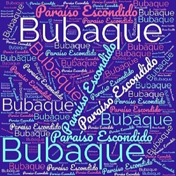

Bubaque
Bubaque é uma das ilhas do Arquipélago dos Bijagós na Guiné-Bissau, administrativamente pertence à região de Bolama e ao sector de Bubaque. Nesta ilha também está assentada a cidade de Bubaque. A ilha de Bubaque, com uma área de 48 km² e cerca de 11 300 habitantes. A ilha é conhecida por sua vida selvagem e tem uma área florestal muito grande, sendo uma importante atração turística para a nação.
Este website fala sobre a cidade de Bubaque.
Nele encontra Informação sobre:
- A sua Localização
- Conteúdos Multimédia
- Diversas Informações
